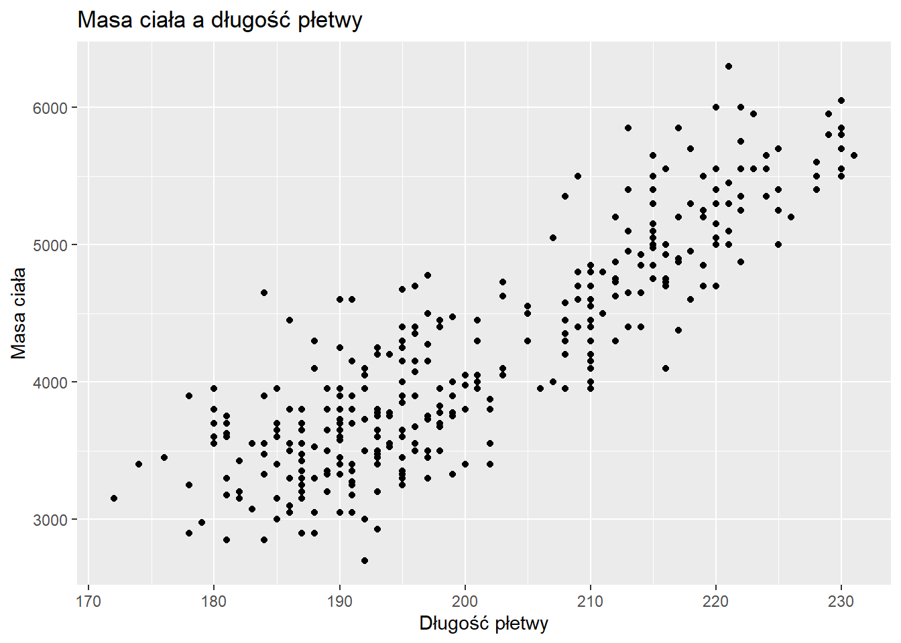
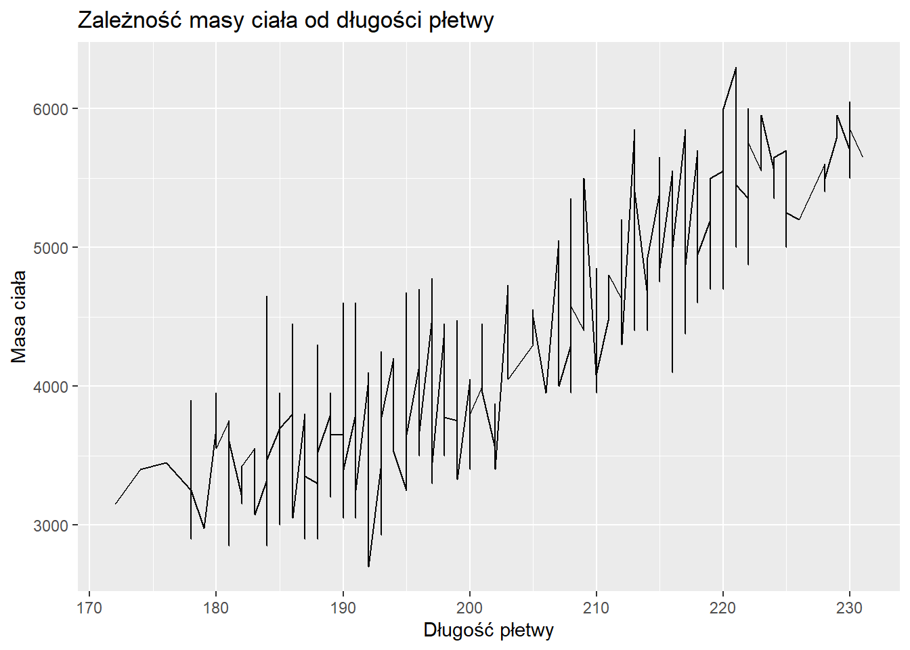
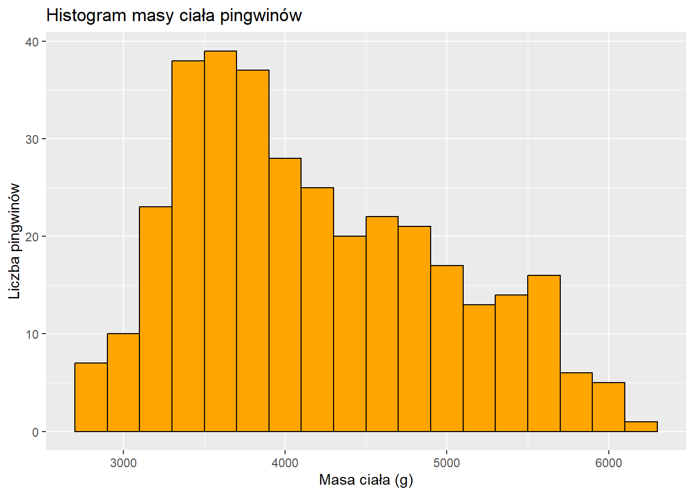
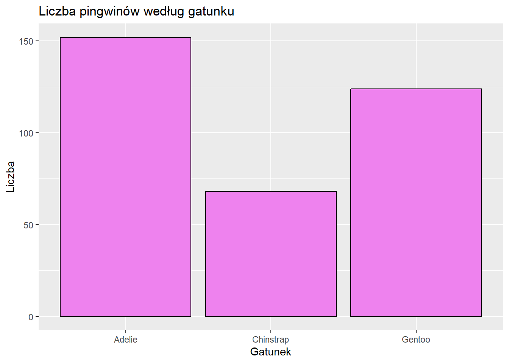
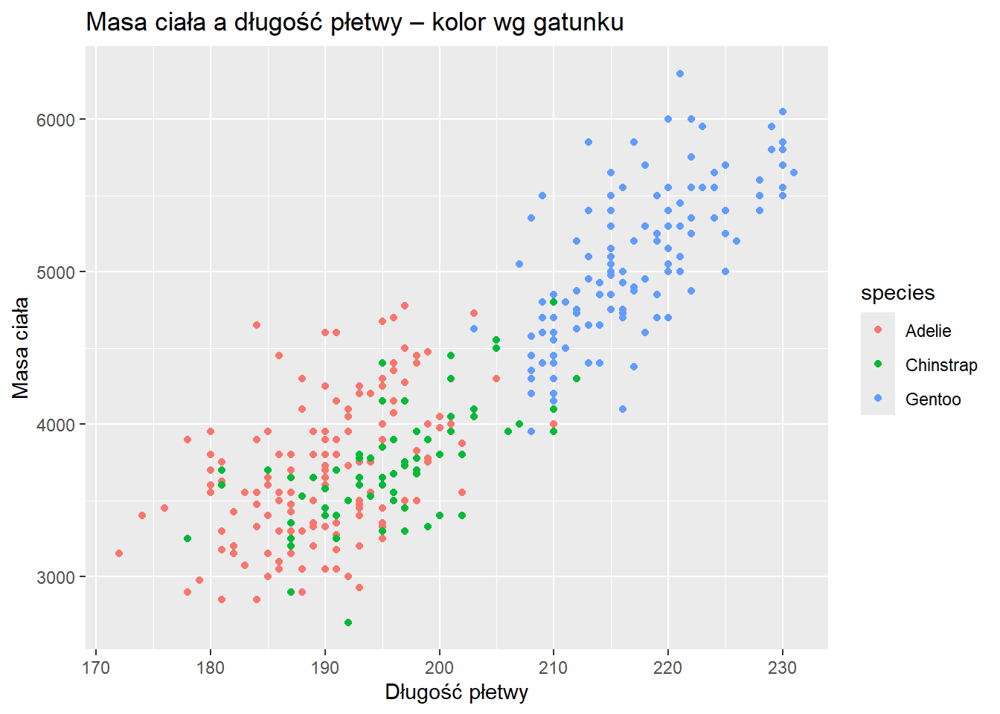
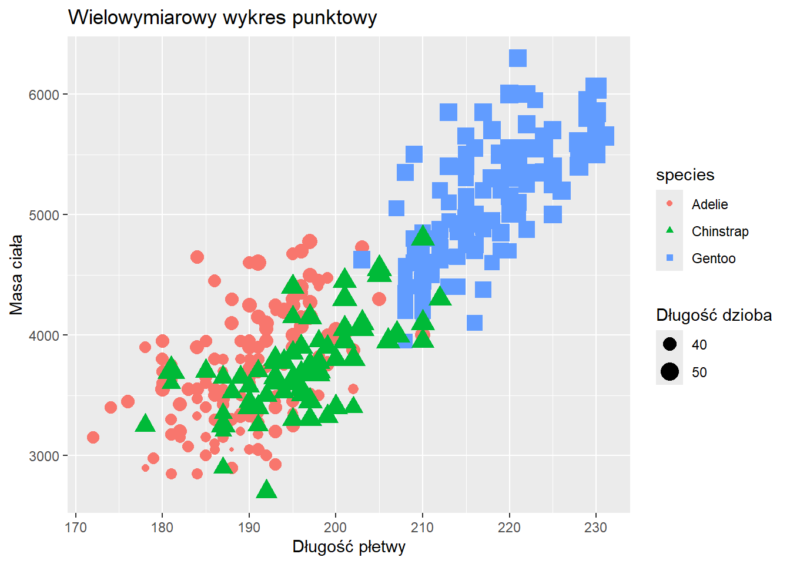

Last updated: 2025-12-02
Checks: 6 1
Knit directory: zajecia/
This reproducible R Markdown analysis was created with workflowr (version 1.7.2). The Checks tab describes the reproducibility checks that were applied when the results were created. The Past versions tab lists the development history.
The R Markdown file has unstaged changes. To know which version of
the R Markdown file created these results, you’ll want to first commit
it to the Git repo. If you’re still working on the analysis, you can
ignore this warning. When you’re finished, you can run
wflow_publish to commit the R Markdown file and build the
HTML.
Great job! The global environment was empty. Objects defined in the global environment can affect the analysis in your R Markdown file in unknown ways. For reproduciblity it’s best to always run the code in an empty environment.
The command set.seed(20251202) was run prior to running
the code in the R Markdown file. Setting a seed ensures that any results
that rely on randomness, e.g. subsampling or permutations, are
reproducible.
Great job! Recording the operating system, R version, and package versions is critical for reproducibility.
Nice! There were no cached chunks for this analysis, so you can be confident that you successfully produced the results during this run.
Great job! Using relative paths to the files within your workflowr project makes it easier to run your code on other machines.
Great! You are using Git for version control. Tracking code development and connecting the code version to the results is critical for reproducibility.
The results in this page were generated with repository version b8507e9. See the Past versions tab to see a history of the changes made to the R Markdown and HTML files.
Note that you need to be careful to ensure that all relevant files for
the analysis have been committed to Git prior to generating the results
(you can use wflow_publish or
wflow_git_commit). workflowr only checks the R Markdown
file, but you know if there are other scripts or data files that it
depends on. Below is the status of the Git repository when the results
were generated:
Ignored files:
Ignored: .Rhistory
Ignored: .Rproj.user/
Unstaged changes:
Modified: analysis/_site.yml
Modified: analysis/cv_template.Rmd
Modified: analysis/palmer_penguins_cwiczenia.Rmd
Note that any generated files, e.g. HTML, png, CSS, etc., are not included in this status report because it is ok for generated content to have uncommitted changes.
These are the previous versions of the repository in which changes were
made to the R Markdown
(analysis/palmer_penguins_cwiczenia.Rmd) and HTML
(docs/palmer_penguins_cwiczenia.html) files. If you’ve
configured a remote Git repository (see ?wflow_git_remote),
click on the hyperlinks in the table below to view the files as they
were in that past version.
| File | Version | Author | Date | Message |
|---|---|---|---|---|
| html | b8507e9 | 96246-Stosik | 2025-12-02 | Build site. |
| Rmd | 6b6d89e | 96246-Stosik | 2025-12-02 | Dodanie nowych analiz |
| html | 6b6d89e | 96246-Stosik | 2025-12-02 | Dodanie nowych analiz |
Najpierw musimy załadować pakiet, który zawiera interesujące nas dane i dowiedzieć się, co te dane przedstawiają.
Ładujemy pakiet do pamięci R za pomocą polecenia
library():
Używając pakietu ‘dplyr’, określmy teraz, ile jest pingwinów dla każdego gatunku i dla każdej lokalizacji:
# A tibble: 3 × 2
species n
<fct> <int>
1 Adelie 152
2 Chinstrap 68
3 Gentoo 124| species | n |
|---|---|
| Adelie | 152 |
| Chinstrap | 68 |
| Gentoo | 124 |
Wszystkie możliwości prezentacji danych w formie tabeli można znaleźć na stronie: kableEXtra
Liczba pingwinów na wyspie:
| island | n |
|---|---|
| Biscoe | 168 |
| Dream | 124 |
| Torgersen | 52 |
| srednia |
|---|
| 4201.754 |
Następnie znajdźmy średnią masy ciała w podziale na grupy (gatunki). Użyjemy funkcji ‘group_by’:
| species | srednia |
|---|---|
| Adelie | 3700.662 |
| Chinstrap | 3733.088 |
| Gentoo | 5076.016 |
Co jeśli chcemy wyfiltrować tylko te pingwiny, które mają masę ciała mniejszą od średniej ich gatunku?
| species | island | bill_length_mm | bill_depth_mm | flipper_length_mm | body_mass_g | sex | year |
|---|---|---|---|---|---|---|---|
| Adelie | Torgersen | 40.3 | 18.0 | 195 | 3250 | female | 2007 |
| Adelie | Torgersen | 36.7 | 19.3 | 193 | 3450 | female | 2007 |
| Adelie | Torgersen | 39.3 | 20.6 | 190 | 3650 | male | 2007 |
| Adelie | Torgersen | 38.9 | 17.8 | 181 | 3625 | female | 2007 |
| Adelie | Torgersen | 34.1 | 18.1 | 193 | 3475 | NA | 2007 |
| Adelie | Torgersen | 37.8 | 17.1 | 186 | 3300 | NA | 2007 |
| Adelie | Torgersen | 37.8 | 17.3 | 180 | 3700 | NA | 2007 |
| Adelie | Torgersen | 41.1 | 17.6 | 182 | 3200 | female | 2007 |
| Adelie | Torgersen | 36.6 | 17.8 | 185 | 3700 | female | 2007 |
| Adelie | Torgersen | 38.7 | 19.0 | 195 | 3450 | female | 2007 |
| Adelie | Torgersen | 34.4 | 18.4 | 184 | 3325 | female | 2007 |
| Adelie | Biscoe | 37.8 | 18.3 | 174 | 3400 | female | 2007 |
| Adelie | Biscoe | 37.7 | 18.7 | 180 | 3600 | male | 2007 |
| Adelie | Biscoe | 40.6 | 18.6 | 183 | 3550 | male | 2007 |
| Adelie | Biscoe | 40.5 | 17.9 | 187 | 3200 | female | 2007 |
| Adelie | Biscoe | 37.9 | 18.6 | 172 | 3150 | female | 2007 |
| Adelie | Dream | 39.5 | 16.7 | 178 | 3250 | female | 2007 |
| Adelie | Dream | 39.5 | 17.8 | 188 | 3300 | female | 2007 |
| Adelie | Dream | 36.4 | 17.0 | 195 | 3325 | female | 2007 |
| Adelie | Dream | 42.2 | 18.5 | 180 | 3550 | female | 2007 |
| Adelie | Dream | 37.6 | 19.3 | 181 | 3300 | female | 2007 |
| Adelie | Dream | 36.5 | 18.0 | 182 | 3150 | female | 2007 |
| Adelie | Dream | 36.0 | 18.5 | 186 | 3100 | female | 2007 |
| Adelie | Dream | 37.0 | 16.9 | 185 | 3000 | female | 2007 |
| Adelie | Dream | 41.1 | 19.0 | 182 | 3425 | male | 2007 |
| Adelie | Dream | 37.5 | 18.9 | 179 | 2975 | NA | 2007 |
| Adelie | Dream | 36.0 | 17.9 | 190 | 3450 | female | 2007 |
| Adelie | Biscoe | 39.6 | 17.7 | 186 | 3500 | female | 2008 |
| Adelie | Biscoe | 35.0 | 17.9 | 190 | 3450 | female | 2008 |
| Adelie | Biscoe | 34.5 | 18.1 | 187 | 2900 | female | 2008 |
| Adelie | Biscoe | 41.4 | 18.6 | 191 | 3700 | male | 2008 |
| Adelie | Biscoe | 39.0 | 17.5 | 186 | 3550 | female | 2008 |
| Adelie | Biscoe | 36.5 | 16.6 | 181 | 2850 | female | 2008 |
| Adelie | Biscoe | 35.7 | 16.9 | 185 | 3150 | female | 2008 |
| Adelie | Biscoe | 37.6 | 17.0 | 185 | 3600 | female | 2008 |
| Adelie | Biscoe | 36.4 | 17.1 | 184 | 2850 | female | 2008 |
| Adelie | Biscoe | 35.5 | 16.2 | 195 | 3350 | female | 2008 |
| Adelie | Torgersen | 35.9 | 16.6 | 190 | 3050 | female | 2008 |
| Adelie | Torgersen | 33.5 | 19.0 | 190 | 3600 | female | 2008 |
| Adelie | Torgersen | 39.6 | 17.2 | 196 | 3550 | female | 2008 |
| Adelie | Torgersen | 35.5 | 17.5 | 190 | 3700 | female | 2008 |
| Adelie | Torgersen | 40.9 | 16.8 | 191 | 3700 | female | 2008 |
| Adelie | Torgersen | 36.2 | 16.1 | 187 | 3550 | female | 2008 |
| Adelie | Torgersen | 34.6 | 17.2 | 189 | 3200 | female | 2008 |
| Adelie | Dream | 37.3 | 17.8 | 191 | 3350 | female | 2008 |
| Adelie | Dream | 41.3 | 20.3 | 194 | 3550 | male | 2008 |
| Adelie | Dream | 36.9 | 18.6 | 189 | 3500 | female | 2008 |
| Adelie | Dream | 38.9 | 18.8 | 190 | 3600 | female | 2008 |
| Adelie | Dream | 35.7 | 18.0 | 202 | 3550 | female | 2008 |
| Adelie | Dream | 34.0 | 17.1 | 185 | 3400 | female | 2008 |
| Adelie | Dream | 36.2 | 17.3 | 187 | 3300 | female | 2008 |
| Adelie | Dream | 38.1 | 18.6 | 190 | 3700 | female | 2008 |
| Adelie | Dream | 33.1 | 16.1 | 178 | 2900 | female | 2008 |
| Adelie | Biscoe | 37.7 | 16.0 | 183 | 3075 | female | 2009 |
| Adelie | Biscoe | 37.9 | 18.6 | 193 | 2925 | female | 2009 |
| Adelie | Biscoe | 39.7 | 18.9 | 184 | 3550 | male | 2009 |
| Adelie | Biscoe | 38.1 | 17.0 | 181 | 3175 | female | 2009 |
| Adelie | Biscoe | 39.7 | 17.7 | 193 | 3200 | female | 2009 |
| Adelie | Torgersen | 38.6 | 17.0 | 188 | 2900 | female | 2009 |
| Adelie | Torgersen | 35.7 | 17.0 | 189 | 3350 | female | 2009 |
| Adelie | Torgersen | 41.1 | 18.6 | 189 | 3325 | male | 2009 |
| Adelie | Torgersen | 36.2 | 17.2 | 187 | 3150 | female | 2009 |
| Adelie | Torgersen | 37.7 | 19.8 | 198 | 3500 | male | 2009 |
| Adelie | Torgersen | 40.2 | 17.0 | 176 | 3450 | female | 2009 |
| Adelie | Torgersen | 35.2 | 15.9 | 186 | 3050 | female | 2009 |
| Adelie | Torgersen | 38.8 | 17.6 | 191 | 3275 | female | 2009 |
| Adelie | Torgersen | 39.0 | 17.1 | 191 | 3050 | female | 2009 |
| Adelie | Torgersen | 38.5 | 17.9 | 190 | 3325 | female | 2009 |
| Adelie | Torgersen | 43.1 | 19.2 | 197 | 3500 | male | 2009 |
| Adelie | Dream | 36.8 | 18.5 | 193 | 3500 | female | 2009 |
| Adelie | Dream | 38.1 | 17.6 | 187 | 3425 | female | 2009 |
| Adelie | Dream | 35.6 | 17.5 | 191 | 3175 | female | 2009 |
| Adelie | Dream | 37.0 | 16.5 | 185 | 3400 | female | 2009 |
| Adelie | Dream | 40.2 | 17.1 | 193 | 3400 | female | 2009 |
| Adelie | Dream | 40.6 | 17.2 | 187 | 3475 | male | 2009 |
| Adelie | Dream | 32.1 | 15.5 | 188 | 3050 | female | 2009 |
| Adelie | Dream | 37.3 | 16.8 | 192 | 3000 | female | 2009 |
| Adelie | Dream | 39.0 | 18.7 | 185 | 3650 | male | 2009 |
| Adelie | Dream | 36.6 | 18.4 | 184 | 3475 | female | 2009 |
| Adelie | Dream | 36.0 | 17.8 | 195 | 3450 | female | 2009 |
| Adelie | Dream | 36.0 | 17.1 | 187 | 3700 | female | 2009 |
| Gentoo | Biscoe | 46.1 | 13.2 | 211 | 4500 | female | 2007 |
| Gentoo | Biscoe | 48.7 | 14.1 | 210 | 4450 | female | 2007 |
| Gentoo | Biscoe | 46.5 | 13.5 | 210 | 4550 | female | 2007 |
| Gentoo | Biscoe | 45.4 | 14.6 | 211 | 4800 | female | 2007 |
| Gentoo | Biscoe | 43.3 | 13.4 | 209 | 4400 | female | 2007 |
| Gentoo | Biscoe | 40.9 | 13.7 | 214 | 4650 | female | 2007 |
| Gentoo | Biscoe | 45.5 | 13.7 | 214 | 4650 | female | 2007 |
| Gentoo | Biscoe | 45.8 | 14.6 | 210 | 4200 | female | 2007 |
| Gentoo | Biscoe | 42.0 | 13.5 | 210 | 4150 | female | 2007 |
| Gentoo | Biscoe | 46.2 | 14.5 | 209 | 4800 | female | 2007 |
| Gentoo | Biscoe | 45.1 | 14.5 | 215 | 5000 | female | 2007 |
| Gentoo | Biscoe | 46.5 | 14.5 | 213 | 4400 | female | 2007 |
| Gentoo | Biscoe | 46.3 | 15.8 | 215 | 5050 | male | 2007 |
| Gentoo | Biscoe | 42.9 | 13.1 | 215 | 5000 | female | 2007 |
| Gentoo | Biscoe | 44.5 | 14.3 | 216 | 4100 | NA | 2007 |
| Gentoo | Biscoe | 48.2 | 14.3 | 210 | 4600 | female | 2007 |
| Gentoo | Biscoe | 42.8 | 14.2 | 209 | 4700 | female | 2007 |
| Gentoo | Biscoe | 45.1 | 14.5 | 207 | 5050 | female | 2007 |
| Gentoo | Biscoe | 42.6 | 13.7 | 213 | 4950 | female | 2008 |
| Gentoo | Biscoe | 44.0 | 13.6 | 208 | 4350 | female | 2008 |
| Gentoo | Biscoe | 42.7 | 13.7 | 208 | 3950 | female | 2008 |
| Gentoo | Biscoe | 45.3 | 13.7 | 210 | 4300 | female | 2008 |
| Gentoo | Biscoe | 49.6 | 15.0 | 216 | 4750 | male | 2008 |
| Gentoo | Biscoe | 43.6 | 13.9 | 217 | 4900 | female | 2008 |
| Gentoo | Biscoe | 45.5 | 13.9 | 210 | 4200 | female | 2008 |
| Gentoo | Biscoe | 46.6 | 14.2 | 210 | 4850 | female | 2008 |
| Gentoo | Biscoe | 45.1 | 14.4 | 210 | 4400 | female | 2008 |
| Gentoo | Biscoe | 50.1 | 15.0 | 225 | 5000 | male | 2008 |
| Gentoo | Biscoe | 46.5 | 14.4 | 217 | 4900 | female | 2008 |
| Gentoo | Biscoe | 45.0 | 15.4 | 220 | 5050 | male | 2008 |
| Gentoo | Biscoe | 43.8 | 13.9 | 208 | 4300 | female | 2008 |
| Gentoo | Biscoe | 45.5 | 15.0 | 220 | 5000 | male | 2008 |
| Gentoo | Biscoe | 43.2 | 14.5 | 208 | 4450 | female | 2008 |
| Gentoo | Biscoe | 45.3 | 13.8 | 208 | 4200 | female | 2008 |
| Gentoo | Biscoe | 45.7 | 13.9 | 214 | 4400 | female | 2008 |
| Gentoo | Biscoe | 45.8 | 14.2 | 219 | 4700 | female | 2008 |
| Gentoo | Biscoe | 46.2 | 14.4 | 214 | 4650 | NA | 2008 |
| Gentoo | Biscoe | 43.5 | 14.2 | 220 | 4700 | female | 2008 |
| Gentoo | Biscoe | 47.7 | 15.0 | 216 | 4750 | female | 2008 |
| Gentoo | Biscoe | 46.4 | 15.6 | 221 | 5000 | male | 2008 |
| Gentoo | Biscoe | 46.4 | 15.0 | 216 | 4700 | female | 2008 |
| Gentoo | Biscoe | 47.5 | 14.2 | 209 | 4600 | female | 2008 |
| Gentoo | Biscoe | 45.2 | 13.8 | 215 | 4750 | female | 2008 |
| Gentoo | Biscoe | 49.1 | 14.5 | 212 | 4625 | female | 2009 |
| Gentoo | Biscoe | 47.4 | 14.6 | 212 | 4725 | female | 2009 |
| Gentoo | Biscoe | 44.9 | 13.8 | 212 | 4750 | female | 2009 |
| Gentoo | Biscoe | 43.4 | 14.4 | 218 | 4600 | female | 2009 |
| Gentoo | Biscoe | 47.5 | 14.0 | 212 | 4875 | female | 2009 |
| Gentoo | Biscoe | 47.5 | 15.0 | 218 | 4950 | female | 2009 |
| Gentoo | Biscoe | 45.5 | 14.5 | 212 | 4750 | female | 2009 |
| Gentoo | Biscoe | 44.5 | 14.7 | 214 | 4850 | female | 2009 |
| Gentoo | Biscoe | 49.4 | 15.8 | 216 | 4925 | male | 2009 |
| Gentoo | Biscoe | 46.9 | 14.6 | 222 | 4875 | female | 2009 |
| Gentoo | Biscoe | 48.4 | 14.4 | 203 | 4625 | female | 2009 |
| Gentoo | Biscoe | 48.5 | 15.0 | 219 | 4850 | female | 2009 |
| Gentoo | Biscoe | 47.2 | 15.5 | 215 | 4975 | female | 2009 |
| Gentoo | Biscoe | 47.3 | 13.8 | 216 | 4725 | NA | 2009 |
| Gentoo | Biscoe | 41.7 | 14.7 | 210 | 4700 | female | 2009 |
| Gentoo | Biscoe | 43.3 | 14.0 | 208 | 4575 | female | 2009 |
| Gentoo | Biscoe | 50.5 | 15.2 | 216 | 5000 | female | 2009 |
| Gentoo | Biscoe | 43.5 | 15.2 | 213 | 4650 | female | 2009 |
| Gentoo | Biscoe | 46.2 | 14.1 | 217 | 4375 | female | 2009 |
| Gentoo | Biscoe | 44.5 | 15.7 | 217 | 4875 | NA | 2009 |
| Gentoo | Biscoe | 47.2 | 13.7 | 214 | 4925 | female | 2009 |
| Gentoo | Biscoe | 46.8 | 14.3 | 215 | 4850 | female | 2009 |
| Chinstrap | Dream | 46.5 | 17.9 | 192 | 3500 | female | 2007 |
| Chinstrap | Dream | 51.3 | 19.2 | 193 | 3650 | male | 2007 |
| Chinstrap | Dream | 45.4 | 18.7 | 188 | 3525 | female | 2007 |
| Chinstrap | Dream | 52.7 | 19.8 | 197 | 3725 | male | 2007 |
| Chinstrap | Dream | 46.1 | 18.2 | 178 | 3250 | female | 2007 |
| Chinstrap | Dream | 51.3 | 19.9 | 198 | 3700 | male | 2007 |
| Chinstrap | Dream | 47.0 | 17.3 | 185 | 3700 | female | 2007 |
| Chinstrap | Dream | 45.9 | 17.1 | 190 | 3575 | female | 2007 |
| Chinstrap | Dream | 50.3 | 20.0 | 197 | 3300 | male | 2007 |
| Chinstrap | Dream | 58.0 | 17.8 | 181 | 3700 | female | 2007 |
| Chinstrap | Dream | 46.4 | 18.6 | 190 | 3450 | female | 2007 |
| Chinstrap | Dream | 42.4 | 17.3 | 181 | 3600 | female | 2007 |
| Chinstrap | Dream | 48.5 | 17.5 | 191 | 3400 | male | 2007 |
| Chinstrap | Dream | 43.2 | 16.6 | 187 | 2900 | female | 2007 |
| Chinstrap | Dream | 46.7 | 17.9 | 195 | 3300 | female | 2007 |
| Chinstrap | Dream | 50.5 | 18.4 | 200 | 3400 | female | 2008 |
| Chinstrap | Dream | 46.4 | 17.8 | 191 | 3700 | female | 2008 |
| Chinstrap | Dream | 40.9 | 16.6 | 187 | 3200 | female | 2008 |
| Chinstrap | Dream | 42.5 | 16.7 | 187 | 3350 | female | 2008 |
| Chinstrap | Dream | 49.7 | 18.6 | 195 | 3600 | male | 2008 |
| Chinstrap | Dream | 46.9 | 16.6 | 192 | 2700 | female | 2008 |
| Chinstrap | Dream | 46.2 | 17.5 | 187 | 3650 | female | 2008 |
| Chinstrap | Dream | 50.9 | 19.1 | 196 | 3550 | male | 2008 |
| Chinstrap | Dream | 45.5 | 17.0 | 196 | 3500 | female | 2008 |
| Chinstrap | Dream | 50.9 | 17.9 | 196 | 3675 | female | 2009 |
| Chinstrap | Dream | 50.1 | 17.9 | 190 | 3400 | female | 2009 |
| Chinstrap | Dream | 51.5 | 18.7 | 187 | 3250 | male | 2009 |
| Chinstrap | Dream | 49.8 | 17.3 | 198 | 3675 | female | 2009 |
| Chinstrap | Dream | 48.1 | 16.4 | 199 | 3325 | female | 2009 |
| Chinstrap | Dream | 45.7 | 17.3 | 193 | 3600 | female | 2009 |
| Chinstrap | Dream | 42.5 | 17.3 | 187 | 3350 | female | 2009 |
| Chinstrap | Dream | 52.2 | 18.8 | 197 | 3450 | male | 2009 |
| Chinstrap | Dream | 45.2 | 16.6 | 191 | 3250 | female | 2009 |
| Chinstrap | Dream | 45.6 | 19.4 | 194 | 3525 | female | 2009 |
| Chinstrap | Dream | 46.8 | 16.5 | 189 | 3650 | female | 2009 |
| Chinstrap | Dream | 45.7 | 17.0 | 195 | 3650 | female | 2009 |
| Chinstrap | Dream | 43.5 | 18.1 | 202 | 3400 | female | 2009 |
Dalej, jeśli chcemy ułożyć pingwiny, które mają mniejszą masę ciała niż średnia ich gatunku, w określonej kolejności (użyjemy funkcji ‘arrange’ z funkcją ‘desc’):
| species | island | bill_length_mm | bill_depth_mm | flipper_length_mm | body_mass_g | sex | year |
|---|---|---|---|---|---|---|---|
| Gentoo | Biscoe | 46.3 | 15.8 | 215 | 5050 | male | 2007 |
| Gentoo | Biscoe | 45.1 | 14.5 | 207 | 5050 | female | 2007 |
| Gentoo | Biscoe | 45.0 | 15.4 | 220 | 5050 | male | 2008 |
| Gentoo | Biscoe | 45.1 | 14.5 | 215 | 5000 | female | 2007 |
| Gentoo | Biscoe | 42.9 | 13.1 | 215 | 5000 | female | 2007 |
| Gentoo | Biscoe | 50.1 | 15.0 | 225 | 5000 | male | 2008 |
| Gentoo | Biscoe | 45.5 | 15.0 | 220 | 5000 | male | 2008 |
| Gentoo | Biscoe | 46.4 | 15.6 | 221 | 5000 | male | 2008 |
| Gentoo | Biscoe | 50.5 | 15.2 | 216 | 5000 | female | 2009 |
| Gentoo | Biscoe | 47.2 | 15.5 | 215 | 4975 | female | 2009 |
| Gentoo | Biscoe | 42.6 | 13.7 | 213 | 4950 | female | 2008 |
| Gentoo | Biscoe | 47.5 | 15.0 | 218 | 4950 | female | 2009 |
| Gentoo | Biscoe | 49.4 | 15.8 | 216 | 4925 | male | 2009 |
| Gentoo | Biscoe | 47.2 | 13.7 | 214 | 4925 | female | 2009 |
| Gentoo | Biscoe | 43.6 | 13.9 | 217 | 4900 | female | 2008 |
| Gentoo | Biscoe | 46.5 | 14.4 | 217 | 4900 | female | 2008 |
| Gentoo | Biscoe | 47.5 | 14.0 | 212 | 4875 | female | 2009 |
| Gentoo | Biscoe | 46.9 | 14.6 | 222 | 4875 | female | 2009 |
| Gentoo | Biscoe | 44.5 | 15.7 | 217 | 4875 | NA | 2009 |
| Gentoo | Biscoe | 46.6 | 14.2 | 210 | 4850 | female | 2008 |
| Gentoo | Biscoe | 44.5 | 14.7 | 214 | 4850 | female | 2009 |
| Gentoo | Biscoe | 48.5 | 15.0 | 219 | 4850 | female | 2009 |
| Gentoo | Biscoe | 46.8 | 14.3 | 215 | 4850 | female | 2009 |
| Gentoo | Biscoe | 45.4 | 14.6 | 211 | 4800 | female | 2007 |
| Gentoo | Biscoe | 46.2 | 14.5 | 209 | 4800 | female | 2007 |
| Gentoo | Biscoe | 49.6 | 15.0 | 216 | 4750 | male | 2008 |
| Gentoo | Biscoe | 47.7 | 15.0 | 216 | 4750 | female | 2008 |
| Gentoo | Biscoe | 45.2 | 13.8 | 215 | 4750 | female | 2008 |
| Gentoo | Biscoe | 44.9 | 13.8 | 212 | 4750 | female | 2009 |
| Gentoo | Biscoe | 45.5 | 14.5 | 212 | 4750 | female | 2009 |
| Gentoo | Biscoe | 47.4 | 14.6 | 212 | 4725 | female | 2009 |
| Gentoo | Biscoe | 47.3 | 13.8 | 216 | 4725 | NA | 2009 |
| Gentoo | Biscoe | 42.8 | 14.2 | 209 | 4700 | female | 2007 |
| Gentoo | Biscoe | 45.8 | 14.2 | 219 | 4700 | female | 2008 |
| Gentoo | Biscoe | 43.5 | 14.2 | 220 | 4700 | female | 2008 |
| Gentoo | Biscoe | 46.4 | 15.0 | 216 | 4700 | female | 2008 |
| Gentoo | Biscoe | 41.7 | 14.7 | 210 | 4700 | female | 2009 |
| Gentoo | Biscoe | 40.9 | 13.7 | 214 | 4650 | female | 2007 |
| Gentoo | Biscoe | 45.5 | 13.7 | 214 | 4650 | female | 2007 |
| Gentoo | Biscoe | 46.2 | 14.4 | 214 | 4650 | NA | 2008 |
| Gentoo | Biscoe | 43.5 | 15.2 | 213 | 4650 | female | 2009 |
| Gentoo | Biscoe | 49.1 | 14.5 | 212 | 4625 | female | 2009 |
| Gentoo | Biscoe | 48.4 | 14.4 | 203 | 4625 | female | 2009 |
| Gentoo | Biscoe | 48.2 | 14.3 | 210 | 4600 | female | 2007 |
| Gentoo | Biscoe | 47.5 | 14.2 | 209 | 4600 | female | 2008 |
| Gentoo | Biscoe | 43.4 | 14.4 | 218 | 4600 | female | 2009 |
| Gentoo | Biscoe | 43.3 | 14.0 | 208 | 4575 | female | 2009 |
| Gentoo | Biscoe | 46.5 | 13.5 | 210 | 4550 | female | 2007 |
| Gentoo | Biscoe | 46.1 | 13.2 | 211 | 4500 | female | 2007 |
| Gentoo | Biscoe | 48.7 | 14.1 | 210 | 4450 | female | 2007 |
| Gentoo | Biscoe | 43.2 | 14.5 | 208 | 4450 | female | 2008 |
| Gentoo | Biscoe | 43.3 | 13.4 | 209 | 4400 | female | 2007 |
| Gentoo | Biscoe | 46.5 | 14.5 | 213 | 4400 | female | 2007 |
| Gentoo | Biscoe | 45.1 | 14.4 | 210 | 4400 | female | 2008 |
| Gentoo | Biscoe | 45.7 | 13.9 | 214 | 4400 | female | 2008 |
| Gentoo | Biscoe | 46.2 | 14.1 | 217 | 4375 | female | 2009 |
| Gentoo | Biscoe | 44.0 | 13.6 | 208 | 4350 | female | 2008 |
| Gentoo | Biscoe | 45.3 | 13.7 | 210 | 4300 | female | 2008 |
| Gentoo | Biscoe | 43.8 | 13.9 | 208 | 4300 | female | 2008 |
| Gentoo | Biscoe | 45.8 | 14.6 | 210 | 4200 | female | 2007 |
| Gentoo | Biscoe | 45.5 | 13.9 | 210 | 4200 | female | 2008 |
| Gentoo | Biscoe | 45.3 | 13.8 | 208 | 4200 | female | 2008 |
| Gentoo | Biscoe | 42.0 | 13.5 | 210 | 4150 | female | 2007 |
| Gentoo | Biscoe | 44.5 | 14.3 | 216 | 4100 | NA | 2007 |
| Gentoo | Biscoe | 42.7 | 13.7 | 208 | 3950 | female | 2008 |
| Chinstrap | Dream | 52.7 | 19.8 | 197 | 3725 | male | 2007 |
| Adelie | Torgersen | 37.8 | 17.3 | 180 | 3700 | NA | 2007 |
| Adelie | Torgersen | 36.6 | 17.8 | 185 | 3700 | female | 2007 |
| Adelie | Biscoe | 41.4 | 18.6 | 191 | 3700 | male | 2008 |
| Adelie | Torgersen | 35.5 | 17.5 | 190 | 3700 | female | 2008 |
| Adelie | Torgersen | 40.9 | 16.8 | 191 | 3700 | female | 2008 |
| Adelie | Dream | 38.1 | 18.6 | 190 | 3700 | female | 2008 |
| Adelie | Dream | 36.0 | 17.1 | 187 | 3700 | female | 2009 |
| Chinstrap | Dream | 51.3 | 19.9 | 198 | 3700 | male | 2007 |
| Chinstrap | Dream | 47.0 | 17.3 | 185 | 3700 | female | 2007 |
| Chinstrap | Dream | 58.0 | 17.8 | 181 | 3700 | female | 2007 |
| Chinstrap | Dream | 46.4 | 17.8 | 191 | 3700 | female | 2008 |
| Chinstrap | Dream | 50.9 | 17.9 | 196 | 3675 | female | 2009 |
| Chinstrap | Dream | 49.8 | 17.3 | 198 | 3675 | female | 2009 |
| Adelie | Torgersen | 39.3 | 20.6 | 190 | 3650 | male | 2007 |
| Adelie | Dream | 39.0 | 18.7 | 185 | 3650 | male | 2009 |
| Chinstrap | Dream | 51.3 | 19.2 | 193 | 3650 | male | 2007 |
| Chinstrap | Dream | 46.2 | 17.5 | 187 | 3650 | female | 2008 |
| Chinstrap | Dream | 46.8 | 16.5 | 189 | 3650 | female | 2009 |
| Chinstrap | Dream | 45.7 | 17.0 | 195 | 3650 | female | 2009 |
| Adelie | Torgersen | 38.9 | 17.8 | 181 | 3625 | female | 2007 |
| Adelie | Biscoe | 37.7 | 18.7 | 180 | 3600 | male | 2007 |
| Adelie | Biscoe | 37.6 | 17.0 | 185 | 3600 | female | 2008 |
| Adelie | Torgersen | 33.5 | 19.0 | 190 | 3600 | female | 2008 |
| Adelie | Dream | 38.9 | 18.8 | 190 | 3600 | female | 2008 |
| Chinstrap | Dream | 42.4 | 17.3 | 181 | 3600 | female | 2007 |
| Chinstrap | Dream | 49.7 | 18.6 | 195 | 3600 | male | 2008 |
| Chinstrap | Dream | 45.7 | 17.3 | 193 | 3600 | female | 2009 |
| Chinstrap | Dream | 45.9 | 17.1 | 190 | 3575 | female | 2007 |
| Adelie | Biscoe | 40.6 | 18.6 | 183 | 3550 | male | 2007 |
| Adelie | Dream | 42.2 | 18.5 | 180 | 3550 | female | 2007 |
| Adelie | Biscoe | 39.0 | 17.5 | 186 | 3550 | female | 2008 |
| Adelie | Torgersen | 39.6 | 17.2 | 196 | 3550 | female | 2008 |
| Adelie | Torgersen | 36.2 | 16.1 | 187 | 3550 | female | 2008 |
| Adelie | Dream | 41.3 | 20.3 | 194 | 3550 | male | 2008 |
| Adelie | Dream | 35.7 | 18.0 | 202 | 3550 | female | 2008 |
| Adelie | Biscoe | 39.7 | 18.9 | 184 | 3550 | male | 2009 |
| Chinstrap | Dream | 50.9 | 19.1 | 196 | 3550 | male | 2008 |
| Chinstrap | Dream | 45.4 | 18.7 | 188 | 3525 | female | 2007 |
| Chinstrap | Dream | 45.6 | 19.4 | 194 | 3525 | female | 2009 |
| Adelie | Biscoe | 39.6 | 17.7 | 186 | 3500 | female | 2008 |
| Adelie | Dream | 36.9 | 18.6 | 189 | 3500 | female | 2008 |
| Adelie | Torgersen | 37.7 | 19.8 | 198 | 3500 | male | 2009 |
| Adelie | Torgersen | 43.1 | 19.2 | 197 | 3500 | male | 2009 |
| Adelie | Dream | 36.8 | 18.5 | 193 | 3500 | female | 2009 |
| Chinstrap | Dream | 46.5 | 17.9 | 192 | 3500 | female | 2007 |
| Chinstrap | Dream | 45.5 | 17.0 | 196 | 3500 | female | 2008 |
| Adelie | Torgersen | 34.1 | 18.1 | 193 | 3475 | NA | 2007 |
| Adelie | Dream | 40.6 | 17.2 | 187 | 3475 | male | 2009 |
| Adelie | Dream | 36.6 | 18.4 | 184 | 3475 | female | 2009 |
| Adelie | Torgersen | 36.7 | 19.3 | 193 | 3450 | female | 2007 |
| Adelie | Torgersen | 38.7 | 19.0 | 195 | 3450 | female | 2007 |
| Adelie | Dream | 36.0 | 17.9 | 190 | 3450 | female | 2007 |
| Adelie | Biscoe | 35.0 | 17.9 | 190 | 3450 | female | 2008 |
| Adelie | Torgersen | 40.2 | 17.0 | 176 | 3450 | female | 2009 |
| Adelie | Dream | 36.0 | 17.8 | 195 | 3450 | female | 2009 |
| Chinstrap | Dream | 46.4 | 18.6 | 190 | 3450 | female | 2007 |
| Chinstrap | Dream | 52.2 | 18.8 | 197 | 3450 | male | 2009 |
| Adelie | Dream | 41.1 | 19.0 | 182 | 3425 | male | 2007 |
| Adelie | Dream | 38.1 | 17.6 | 187 | 3425 | female | 2009 |
| Adelie | Biscoe | 37.8 | 18.3 | 174 | 3400 | female | 2007 |
| Adelie | Dream | 34.0 | 17.1 | 185 | 3400 | female | 2008 |
| Adelie | Dream | 37.0 | 16.5 | 185 | 3400 | female | 2009 |
| Adelie | Dream | 40.2 | 17.1 | 193 | 3400 | female | 2009 |
| Chinstrap | Dream | 48.5 | 17.5 | 191 | 3400 | male | 2007 |
| Chinstrap | Dream | 50.5 | 18.4 | 200 | 3400 | female | 2008 |
| Chinstrap | Dream | 50.1 | 17.9 | 190 | 3400 | female | 2009 |
| Chinstrap | Dream | 43.5 | 18.1 | 202 | 3400 | female | 2009 |
| Adelie | Biscoe | 35.5 | 16.2 | 195 | 3350 | female | 2008 |
| Adelie | Dream | 37.3 | 17.8 | 191 | 3350 | female | 2008 |
| Adelie | Torgersen | 35.7 | 17.0 | 189 | 3350 | female | 2009 |
| Chinstrap | Dream | 42.5 | 16.7 | 187 | 3350 | female | 2008 |
| Chinstrap | Dream | 42.5 | 17.3 | 187 | 3350 | female | 2009 |
| Adelie | Torgersen | 34.4 | 18.4 | 184 | 3325 | female | 2007 |
| Adelie | Dream | 36.4 | 17.0 | 195 | 3325 | female | 2007 |
| Adelie | Torgersen | 41.1 | 18.6 | 189 | 3325 | male | 2009 |
| Adelie | Torgersen | 38.5 | 17.9 | 190 | 3325 | female | 2009 |
| Chinstrap | Dream | 48.1 | 16.4 | 199 | 3325 | female | 2009 |
| Adelie | Torgersen | 37.8 | 17.1 | 186 | 3300 | NA | 2007 |
| Adelie | Dream | 39.5 | 17.8 | 188 | 3300 | female | 2007 |
| Adelie | Dream | 37.6 | 19.3 | 181 | 3300 | female | 2007 |
| Adelie | Dream | 36.2 | 17.3 | 187 | 3300 | female | 2008 |
| Chinstrap | Dream | 50.3 | 20.0 | 197 | 3300 | male | 2007 |
| Chinstrap | Dream | 46.7 | 17.9 | 195 | 3300 | female | 2007 |
| Adelie | Torgersen | 38.8 | 17.6 | 191 | 3275 | female | 2009 |
| Adelie | Torgersen | 40.3 | 18.0 | 195 | 3250 | female | 2007 |
| Adelie | Dream | 39.5 | 16.7 | 178 | 3250 | female | 2007 |
| Chinstrap | Dream | 46.1 | 18.2 | 178 | 3250 | female | 2007 |
| Chinstrap | Dream | 51.5 | 18.7 | 187 | 3250 | male | 2009 |
| Chinstrap | Dream | 45.2 | 16.6 | 191 | 3250 | female | 2009 |
| Adelie | Torgersen | 41.1 | 17.6 | 182 | 3200 | female | 2007 |
| Adelie | Biscoe | 40.5 | 17.9 | 187 | 3200 | female | 2007 |
| Adelie | Torgersen | 34.6 | 17.2 | 189 | 3200 | female | 2008 |
| Adelie | Biscoe | 39.7 | 17.7 | 193 | 3200 | female | 2009 |
| Chinstrap | Dream | 40.9 | 16.6 | 187 | 3200 | female | 2008 |
| Adelie | Biscoe | 38.1 | 17.0 | 181 | 3175 | female | 2009 |
| Adelie | Dream | 35.6 | 17.5 | 191 | 3175 | female | 2009 |
| Adelie | Biscoe | 37.9 | 18.6 | 172 | 3150 | female | 2007 |
| Adelie | Dream | 36.5 | 18.0 | 182 | 3150 | female | 2007 |
| Adelie | Biscoe | 35.7 | 16.9 | 185 | 3150 | female | 2008 |
| Adelie | Torgersen | 36.2 | 17.2 | 187 | 3150 | female | 2009 |
| Adelie | Dream | 36.0 | 18.5 | 186 | 3100 | female | 2007 |
| Adelie | Biscoe | 37.7 | 16.0 | 183 | 3075 | female | 2009 |
| Adelie | Torgersen | 35.9 | 16.6 | 190 | 3050 | female | 2008 |
| Adelie | Torgersen | 35.2 | 15.9 | 186 | 3050 | female | 2009 |
| Adelie | Torgersen | 39.0 | 17.1 | 191 | 3050 | female | 2009 |
| Adelie | Dream | 32.1 | 15.5 | 188 | 3050 | female | 2009 |
| Adelie | Dream | 37.0 | 16.9 | 185 | 3000 | female | 2007 |
| Adelie | Dream | 37.3 | 16.8 | 192 | 3000 | female | 2009 |
| Adelie | Dream | 37.5 | 18.9 | 179 | 2975 | NA | 2007 |
| Adelie | Biscoe | 37.9 | 18.6 | 193 | 2925 | female | 2009 |
| Adelie | Biscoe | 34.5 | 18.1 | 187 | 2900 | female | 2008 |
| Adelie | Dream | 33.1 | 16.1 | 178 | 2900 | female | 2008 |
| Adelie | Torgersen | 38.6 | 17.0 | 188 | 2900 | female | 2009 |
| Chinstrap | Dream | 43.2 | 16.6 | 187 | 2900 | female | 2007 |
| Adelie | Biscoe | 36.5 | 16.6 | 181 | 2850 | female | 2008 |
| Adelie | Biscoe | 36.4 | 17.1 | 184 | 2850 | female | 2008 |
| Chinstrap | Dream | 46.9 | 16.6 | 192 | 2700 | female | 2008 |
Przejdźmy do wizualizacji naszych danych za pomocą biblioteki ‘ggplot2’. Jak poprzednio, najpierw instalujemy pakiet w systemie (przypomnienie: jest to jednorazowy krok), a następnie ładujemy pakiet do środowiska.
Na początek stworzymy podstawowy wykres rozrzutu przedstawiający zmienność masy ciała w odniesieniu do długości płetwy pingwina:

Następnie narysujemy wykres liniowy przedstawiający zmienność masy ciała w odniesieniu do długości płetwy pingwina: 
Dalej, stworzymy wykres słupkowy i histogram. Na wykresie słupkowym każdy punkt danych jest reprezentowany przez słupek, którego długość jest proporcjonalna do reprezentowanej wartości. Podobnie jak na wykresie słupkowym, histogram przedstawia słupki, ale dla punktów danych pogrupowanych w zakresy. Zakresy są ciągłymi przedziałami liczb. Wykres słupkowy i histogram przedstawiają liczbę pingwinów o danej masie ciała:

Aby dodać odrobinę koloru, włączamy parametr koloru w nawiasach estetyki, gdzie punkty są podświetlane w zależności od gatunku pingwinów:

Podobnie możemy zmienić rozmiar punktów na podstawie poziomów kolumny czynnikowej. Jeśli chcemy pójść jeszcze dalej, możemy zmienić kształt punktu na podstawie poziomów kolumny czynnikowej: 
R version 4.3.0 (2023-04-21 ucrt)
Platform: x86_64-w64-mingw32/x64 (64-bit)
Running under: Windows 11 x64 (build 26200)
Matrix products: default
locale:
[1] LC_COLLATE=Polish_Poland.utf8 LC_CTYPE=Polish_Poland.utf8
[3] LC_MONETARY=Polish_Poland.utf8 LC_NUMERIC=C
[5] LC_TIME=Polish_Poland.utf8
time zone: Europe/Warsaw
tzcode source: internal
attached base packages:
[1] stats graphics grDevices utils datasets methods base
other attached packages:
[1] ggplot2_4.0.0 pander_0.6.6 dplyr_1.1.4
[4] kableExtra_1.4.0 palmerpenguins_0.1.1 workflowr_1.7.2
loaded via a namespace (and not attached):
[1] sass_0.4.9 utf8_1.2.6 generics_0.1.4 xml2_1.5.1
[5] stringi_1.8.7 digest_0.6.37 magrittr_2.0.4 evaluate_1.0.5
[9] grid_4.3.0 RColorBrewer_1.1-3 fastmap_1.2.0 rprojroot_2.1.1
[13] jsonlite_2.0.0 processx_3.8.6 whisker_0.4.1 ps_1.9.0
[17] promises_1.3.2 httr_1.4.7 viridisLite_0.4.2 scales_1.4.0
[21] textshaping_1.0.4 jquerylib_0.1.4 cli_3.6.4 rlang_1.1.5
[25] withr_3.0.2 cachem_1.1.0 yaml_2.3.10 tools_4.3.0
[29] httpuv_1.6.15 vctrs_0.6.5 R6_2.6.1 lifecycle_1.0.4
[33] git2r_0.36.2 stringr_1.6.0 fs_1.6.5 pkgconfig_2.0.3
[37] callr_3.7.6 gtable_0.3.6 pillar_1.11.1 bslib_0.9.0
[41] later_1.4.1 glue_1.8.0 Rcpp_1.0.14 systemfonts_1.3.1
[45] xfun_0.54 tibble_3.3.0 tidyselect_1.2.1 rstudioapi_0.17.1
[49] knitr_1.50 farver_2.1.2 htmltools_0.5.8.1 labeling_0.4.3
[53] rmarkdown_2.30 svglite_2.2.2 compiler_4.3.0 S7_0.2.0
[57] getPass_0.2-4